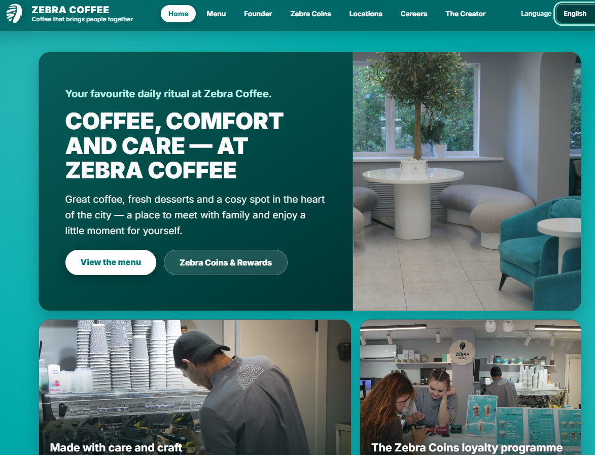
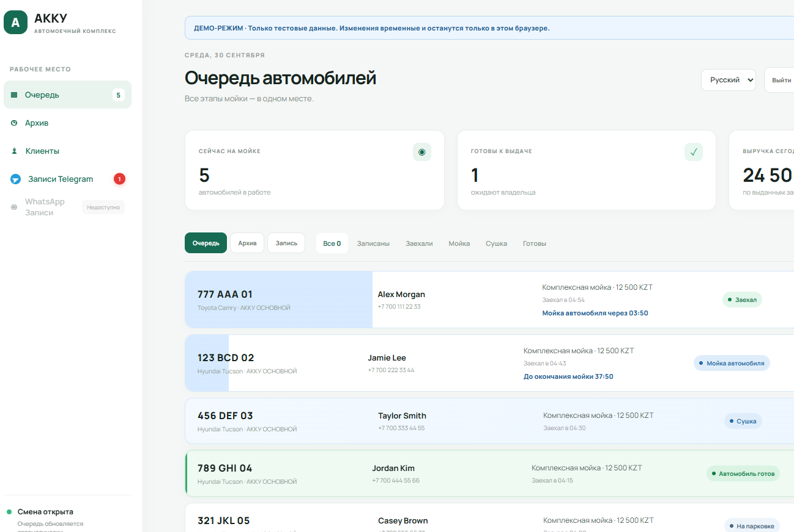

Zebra Coffee
Зебра Кофе · Сеть кофеен в странах СНГ
История бренда и основателя, меню с конструктором напитков, карта кофеен и раздел для соискателей.
Choose a language
Здесь собраны мои проекты. Ниже представлены 2 проекта. Какой из них вы хотите посмотреть?

Зебра Кофе · Сеть кофеен в странах СНГ
История бренда и основателя, меню с конструктором напитков, карта кофеен и раздел для соискателей.

АККУ · Автоматизация автомойки
Записи, очередь и контроль этапов мойки, история автомобилей, база клиентов и Telegram-уведомления.
Расскажите о задаче — обсудим идею, сроки и подберём решение.